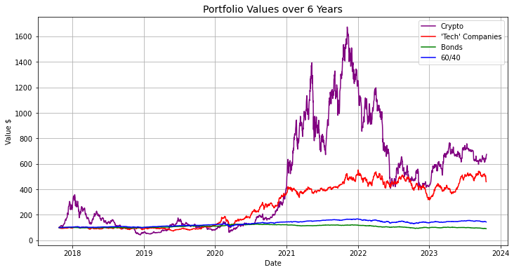

Value at Risk pt.2 (Diversification)
The magic of covariance
How to reduce the value that we are risking
Last post I explained the metric of the value at risk (link). We were able to find the value a single asset is risking more accurately with different distributions so that the number we get for a VaR feels more tangible. Holding something like $BTCüü† or $SPYüïµÔ∏è we have a good understanding of what value we can lose over a given timeframe. Measuring the value is one thing though, now we have to minimize that number so that we can prevent some downside.
I teased that the answer to how we reduce our Value at Risk is through the magic of diversification. You have probably heard of this before and understand that holding both BTC and ETH might provide some amount of diversification because they can't both go down at the same time right? Right? Obviously we know that they do but at slightly different amounts. Our goal today is to be able to quantify how related different assets are historically so that we select assets that won't lose value at the same time and thus significantly reduce our Value at Risk. Once we can minimize our VaR we can build a portfolio that has the assets we want and a VaR threshold so we can minimize some of the volatility and risk to an overall portfolio.
Correlation --> Covariance
First, some math definitions to get you people going.
While correlation is the more popular english terms for things that are similar it means a similar (or correlated) but not the same thing to covariance in math world. When two things are correlated they are normalized to scale, so a correlation is always between -1 (perfect negative relationship) and 1 (perfect relationship). A correlation near 1 might be the amount of rain in Anaheim, California and the sales of umbrellas at Disneyland. The number of sales of umbrellas might have a high variance though as some years it rains a lot, others it doesn't, along with other factors like if Disney releases a limited edition R2D2 umbrella that beeps when you open it and maybe even a light drizzle causes people to buy a lot of umbrellas. All we know from the correlation is that when rain go up, umbrella sales go up, but most of the time it's not 1:1 and it doesn't rain the same amount every day, so we have some variance in the data.
The holy grail in finance is to find two things with a negative correlation that you think will both go up in the long term. I covered a lot of this in a post I did about beta (link) but it's important to know that in order to reduce risk we want to find things that move opposite each other over one day periods. If ETH is up ⬆️ we want something like IBM or bonds to be down ⬇️ and vice versa so that over one day periods our portfolio doesn't lose us a lot of money.
How that relates to our risk measurement is that if one asset is incredibly volatile, something that is equally volatile but in the exact opposite direction makes our portfolio less risky. Even if something is not perfectly anticorrelated, if we have a stable asset and a volatile one, our profile is less risky and we're able to have exposure to the more volatile asset rather than just owning the boring one which may have lower overall returns in the long run. Having assets with negative covariance helps a portfolio be less risky and in danger of losing less money over one day.
\[\text{Cov}(X, Y) = \frac{\Sigma{(x_i - \bar{x})(y_i - \bar{y})}}{n}\]
So we know covariance is mathematically how an asset moves relative to another, here is the equation to define covariance since nothing makes ideas more tangible than some LaTeX notation.
In regular speak we see the difference between one asset and its average, multiplied by the same for the other asset, divided by the number of observations. So if something over a one day period moves very differently to its average while your other asset moves less than its average this would produce a negative number and give you one metric to show that on average the two assets move opposite each other. That's the aspect we're after in reducing volatility.
How this relates to Correlation is the normalization aspect and has this covariance number divided by the standard deviations of both assets to return a number between -1 and 1.
\[\text{Corr}(X, Y) = \frac{\text{Cov}(X, Y)}{\sigma_X \sigma_Y}\]
What is a Portfolio
A portfolio üíº¬†is just a group of assets with weights that can be though of as a new return series that we can turn into the same charts and histograms as before. Our assembly of different assets with different weights can create a more desirable line on a chart and Value at Risk than a single asset can. Here are some examples to illustrate the possibilities for different types of investors.
I have created 6 different “portfolios” here:
1) Crypto is 50/50 BTC and ETH,
2) 'Tech' Companies is 50/50 TSLA and IBM
3) Bonds is 50/50 TLT and SHY (20+ year treasury ETF and 1-2 year treasury ETF)
4) 60/40 is 60/20/20 of SPY, TLT, and SHY, meant to replicate the traditional safe portfolio of stocks and bonds.
These are very simple portfolios and you can probably do better buying an ETF (unless you want crypto) but I use them to just show original price series and we'll compare the VaRs with the underlying as well.
This chart really highlights the bond bear market and how much is held down the 60/40 (boomer favorite) portfolio. To try to be fair, here is the past 3 years rather than 6 to try to show closer values.
Ouch, really not that much better. But maybe we can find a reason someone would own bonds or a 60/40 portfolio. Remember that pure returns and lines on a chart aren't everything. And we can see that crypto portfolio had some wild swings and if we had a shorter time horizon than 3 years, maybe it wasn't a good choice.
But we know lines on a chart being higher aren't everything for an investor, so let's try to look into how we can calculate a VaR and then see why someone would want to own those abysmal green and blue lines.
To be an accurate portfolio we keep our weights constant every trading day, so we always hold 50% TSLA and 50% IBM in the 'Tech' portfolio. To do this practically would involve trading at the open every day. This keeps our ratios and covariance constant, you can imagine if you bought $500 of TSLA and $500 of IBM 6 years ago and never adjusted it your value would look at lot more like the purple line and your portfolio would end up being 90% TSLA after it appreciates much more than IBM.
VaR in a Portfolio
In order to calculate the Value at Risk of a single asset here is the formula we used in my last post:
\[\text{VaR}_{\alpha} = \text{Mean Return} - \text{Z}_{\alpha} * \space\sigma\space * \sqrt{\text{Days}}\]
In order to do this with a portfolio of assets we can use the same thing, but that \(\sigma\) term can look a little different when we don't have a single asset to take the standard deviation of returns.
\[\text{VaR}_{\alpha} = \text{Mean Return} - \text{Z}_{\alpha} * \space\sqrt{\textbf{w}^T \cdot \Sigma_{\text{cov}} \cdot \textbf{w}}\space * \sqrt{\text{Days}}\]
Remember that the standard deviation is just the square root of the variance and that's exactly what we're finding with the \(\Sigma\) term. We have a Covariance matrix with the weights of that index multiplied (dot product). There are some intricacies of linear algebra here that can be ignored and we can just think of this as the standard deviation for a group of assets rather than a single asset. This is also assuming a normal distribution like we did before, so we could calculate this variance matrix to come up with a replacement for the standard deviation, or… we could find the lower 5% of returns on our calculated portfolios like we did before so we're not relying on the assumption of a normal distribution.
While talking about distributions, I have to take this opportunity to post one of the most #rare charts around. How would you visualize multiple distributions at once? Violin plot. üéª
But back to how to finding the risk of losing 5%, we can calculate a covariance matrix and use the 'Z alpha' term of 1.65 for a normal distribution, orrrr we can find the lower 5% of a using a ‚ÄúProbability Point Function‚Äù of a different distribution. We can even use a fun new one. ü§™
Student's T Distribution
You didn't think I'd write this without a fun new distribution did you? Another distribution I've been using that I think suits financial returns even better (by being symmetric and not at risk of overfitting like with KDE) is the Student's T Distribution. Popularized and named by a statistician at the Guinness brewery in Ireland in 1908 it blah blah blah, here's what it looks like.
The Student's T distribution has a parameter “degrees of freedom” with a range from 1 to infinity where 1 makes the the distribution look like the Cauchy distribution (fat tails and higher frequency around the mean) and ∞\infin∞ as the normal distribution (small tails and lower frequency around the mean).
My opinion is that this improves the Cauchy distribution and should be used when not wanting to have a data dependent KDE, but we will use all to create VaRs so that we can see the difference and focus on the overall point of this post which is to be able to feel confident calculating the value we're risking with a portfolio of assets.
VaRs Per Distribution
Now that we know different ways we can assume a distribution of returns, we can start comparing the Values at Risk for these different distributions.
Everything looks pretty similar except for the Cauchy which is much higher as it assumes much bigger tails in the distribution. I wouldn't say this is wasted effort, just effort to understand that even with all of these different distributions, they're not going to change our outcome that much.
The real value we're looking for is how much diversification helps us reduce our risk. So now that we've compared different distribution VaRs to the same asset, let's see what diversification does to our VaR compared to just a single asset of the underlying.
Diversify ü™Ñ
Now let's see the power of diversification. Most risk metrics, including VaR, are not the sum of their parts. Meaning 50% an asset with a VaR of 1, and 50% an asset with VaR of 3 does not make a portfolio with a VaR of 2. Due to the correlation or covariance of assets, the Value at Risk of a portfolio can sometime be less than even the less volatile asset in a portfolio, and at a minimum it's certainly not the weighted average of the underlying assets. We can also include less volatile assets even at lower weights to bring down our VaR but not hurt returns too significantly. I've made a few portfolios and shown the VaR for their underlying components and of the portfolio, as well as the CAGR (Cumulative Annual Growth Rate, or annualized geometric mean) of that portfolio for the past 6 years.
Hopefully these bar charts are demonstrating that a portfolio's VaR isn't immediately obvious when seeing the underlying assets' risk profile. Also showing the CAGR of the more risky portfolios shows that there is some reward for taking that risk.
As a disclaimer, this data was taken over the last 6 years when crypto and stocks have done exceptionally well and bonds have done exceptionally poor, so it is still worth adding your own investment thesis to how each individual asset might perform in the future, we looked at adding forward returns to individual assets in my last post. The volatility of an asset may still hold constant or at least relatively compared to others, so that CAGR number is the one you want consider changing for your forecasting.
On considering how you want to arrange your portfolio, each individual may have a different definition of risk adjusted returns. You could use the Sharpe or Sortino ratios (covered here), or you could want to own a certain asset but know you need a one day liquidity and not have your assets fall by more than X%.
As an example you could be a strong MKR believer that it will explode in value, but if you know that you couldn't stomach an 8% loss in one day so you could pair MKR with BTC or some bonds to reduce your potential amount lost over one day or VaR.
If only there was a way we could quickly optimize a portfolio with simple tools anyone could use ü§î.
Optimizing a portfolio with simple tools
Let's define our problem. We want to own a certain asset, but we have a limit as to how much we're willing to lose over a certain time frame. We're equating that limit of amount we're willing to lose to the Value at Risk measurement, and we're using the Student's T Distribution because we're different, unique, flirty, and fun.
Rather than optimize based on data we've collected about past returns and forecast forward returns, but that leaves us very exposed to past data overfitting based on trends that aren't necessarily going to repeat. Remember the 60/40 was the gold standard until 3 years ago when bonds finally went down! (Because it's hard to go any other direction when interest rates are 0.) So let's pick an asset that we want to own and a VaR that we're willing to lose, then we can find the optimal portfolio in order to achieve that by maximizing the amount of our desired asset and minimize the VaR to be below our threshold.
Let's start with the functions to calculate portfolio returns and the Value at Risk using the Student's T distribution:
def portfolio_prices(price_list, weights='equal'):
'''
Finds daily portfolio value normalized to $1.
Aligns by common dates rather than filling all dates.
'''
assets = len(price_list)
# Default to equal weights or take a numpy array for weights of assets
if weights == 'equal':
weights = np.array([1 / assets] * assets)
elif type(weights) == np.ndarray:
pass
else:
print('weights value is equal or numpy array')
# Step 1: Concatenate all price series to align by common dates
all_prices = pd.concat(price_list, axis=1, keys=range(assets))
# Step 2: Calculate daily returns for each asset
daily_returns_list = [(all_prices[i].pct_change()).dropna() for i in range(assets)]
# Step 3: Apply portfolio weights to get weighted returns
weighted_daily_returns = [w * dr for w, dr in zip(weights, daily_returns_list)]
# Step 4: Sum weighted returns to get portfolio return
portfolio_daily_return = pd.concat(weighted_daily_returns, axis=1).sum(axis=1)
# Step 5: Normalize to $1
portfolio_performance = (1 + portfolio_daily_return).cumprod()
portfolio_performance.iloc[0] = 1 # set the first value to 1
return portfolio_performance
def var_portfolio_studentt(price_list, weights = 'equal', alpha = 0.95):
'''
Full function for taking a list of price series and creating a VaR
Price series are pandas series with dates
Even weights for assets as default
Uses Student's T distribution
'''
portfolio = portfolio_prices(price_list, weights)
portfolio_returns = portfolio.pct_change().dropna()
df, loc, scale = t.fit(portfolio_returns)
t_alpha = t.ppf(1-alpha, df, loc, scale)
return -t_alpha
Okay those are the helper functions, hopefully those are easy to understand on how I'm calculating returns and VaR of a portfolio of assets. One thing to note here is that equities don't trade on the weekend, for portfolios of just equities these non trading days are not used, but if you have a portfolio of crypto and equities the equity prices don't move over the weekend while crypto does making your volatility artificially lower. Since you can't actually liquidate your equities over the weekend this doesn't make a lot of sense but it's the best of bad solutions for a portfolio that has both.
Anyway here's the optimization function.
def optimize_portfolio(price_series_list, target_var, preferred_asset_index=0):
'''
Optimize a portfolio to maximize the weight of a preferred asset while keeping VaR below a target.
Parameters:
- price_series_list: List of pandas Series, each representing the daily prices of an asset.
- target_var: Float, the target maximum Value at Risk (VaR) for the portfolio.
- preferred_asset_index: Int, index of the preferred asset in price_series_list (default is 0).
Returns:
- Numpy array of asset weights for the optimized portfolio.
'''
# Number of assets in the portfolio
num_assets = len(price_series_list)
# Calculate the daily returns for each asset
returns_list = [price_series.pct_change().dropna() for price_series in price_series_list]
# Calculate the covariance matrix of the asset returns
covariance_matrix = pd.concat(returns_list, axis=1).cov()
# Initialize weights with 100% in the preferred asset
initial_weights = np.zeros(num_assets)
initial_weights[preferred_asset_index] = 1
# Calculate the VaR of the initial portfolio
if var_portfolio_studentt(price_series_list, initial_weights) > target_var:
# Identify assets other than the preferred one
other_assets = list(set(range(num_assets)) - {preferred_asset_index})
# Sort other assets by their covariance with the preferred asset
sorted_other_assets = sorted(other_assets, key=lambda x: covariance_matrix.iloc[preferred_asset_index, x])
for asset in sorted_other_assets:
# Start with the initial weights
temp_weights = initial_weights.copy()
increment = 0.01 # Increment step for asset weights
# Incrementally adjust the asset weights
while temp_weights[asset] < 1:
# Increase weight of current asset and decrease weight of preferred asset
temp_weights[asset] += increment
temp_weights[preferred_asset_index] -= increment
# Calculate the new VaR with adjusted weights
new_var = var_portfolio_studentt(price_series_list, temp_weights)
# Check if new VaR is below target
if new_var <= target_var:
return temp_weights # Return optimized weights
else:
return initial_weights # The initial portfolio is already below the target VaR
You're welcome for the clear and concise python. While this is somewhat a simple looping function it relies on our knowledge of the underlying functions and how they are applied. I promise you that I tried to do some more clever functions in order to compute this including several hours reading docs from scipy.minimize (the more I modified it the more it ended up looking like the above) and implementing my own Genetic Algorithm which didn't not work, it just wasn't as good. Ultimately whether it was an optimizer function or the Genetic Algorithm, the way to make it better was to give it the answer that I already knew. The asset with the most negative covariance to our desired asset would allow us to pair it and make a portfolio with the VaR constraint at the highest weighting of the asset we wanted. And that's exactly what this function does.
The function finds covariance of the assets given, it then sorts them by their negative covariance. Using the asset with the lowest covariance we iterate allocation to that asset in order to achieve the desired VaR given. The portfolio starts at 100% desired asset and 0% anything else. If the VaR of that portfolio is too high, we take 1% away from our maximized asset and give it to the asset with the highest covariance and recalculate VaR. We do this continually until we reach our desired VaR and return the weights which will be the maximum of the asset we want with another asset with negative covariance that reduces our VaR.
Who is this even for tho frfr
The output portfolio is great for someone who wants to own a particular asset that can't stomach a negative move in their assets beyond a certain threshold which we define as a VaR. If you want to extend that VaR to a multi day period or use a different method like we discussed in my last post it should be very easy to switch out the VaR calculation function and the optimizer will stay the same.
While I wouldn't expect anyone to use this function to direct all of their investments, it does help illustrate Value at Risk as well as the relationship of anti-correlated (negative covariance) assets. For instance in this function if you want to maximize your MKR exposure but your significant other will beat you up if you lose more than 5% of your portfolio in a day you can input that here with some other desired assets. If you put short term bonds in there like the SHY ETF, you'll get to hold more MKR but you other exposure is essentially cash. An optimized MKR portfolio with a max VaR of 5% would be 61% MKR and 39% SHY for a CAGR over the last 5 years of 10%. Spelling it out like that it doesn't sound that good. 10% is less than the S&P 500 over the same period, and the VaR of just the SPY ETF is 1.8%. So it probably would've been better to just own that. But this function isn't for optimizing for a Sharpe ratio (link, si tu veux) where we try to balance risk and return. That can be done another time.
You can also pick and choose what assets you'll let be in your portfolio. If you refuse to own bonds you can try passing just crypto and stock. For instance if you did that with MKR, ETH, BTC, and SPY with a VaR not exceeding 5% again this function would recommend a portfolio of just MKR and SPY at 59/41. So less MKR, but not much less, and the returns of this portfolio would likely be much higher, or at least it was in the past.
D'accord, enough of this, next time we're not talking about Value at Risk I promise. Maybe some AI stuff or more coding than simple statistics math maybe we can use all of that to generate a frontier of efficient portfolios. Who knows.
Adieu.